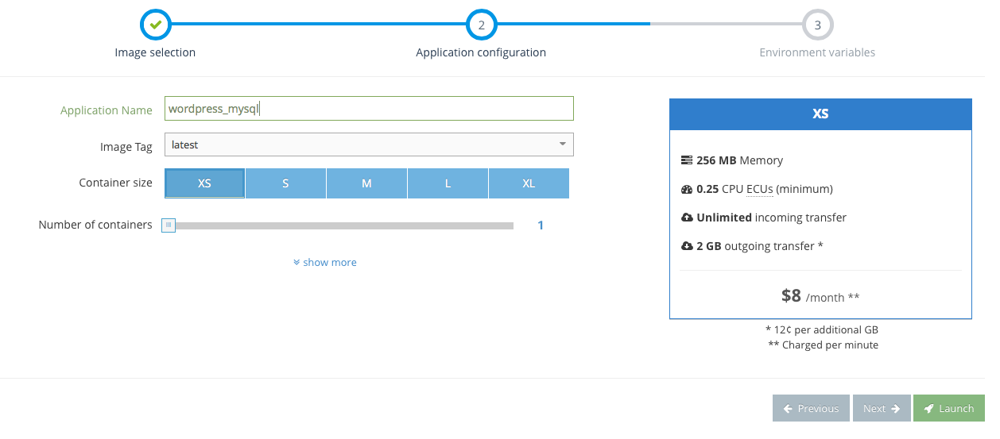
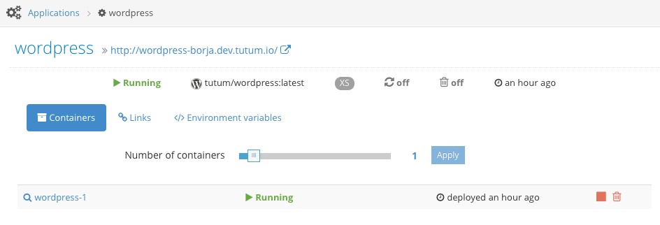

Scaling an application¶
If the application that you are deploying supports horizontal scaling, Tutum makes it easy to spawn new instances (containers) with your application to handle any additional load.
What can be scaled horizontally¶
Any application that can handle additional load by just increasing the number of instances (containers) of such application. Examples include: * Stateless web servers and proxies that listen in port 80 * “Worker” instances that process jobs from a queue and do not receive user traffic * “Cron”-style instances that execute periodic tasks and do not receive user traffic
Usually, databases cannot be scaled horizontally by just increasing the number of instances. The application has to be configured specifically to handle horizontal scaling, for example, for MySQL to automatically configure itself as a master or a slave instance depending on the number of existing instances in the cluster. A custom proxy is usually deployed in these scenarios to route traffic to the appropiate instance.
How Tutum handles scaling¶
When an application is launched with more than one instance, the second and subsequent instances are linked to all the other instances. This environment variables are very useful if your application needs to autoconfigure itself when launching depending on the number of instances already running. For example, if an application named my-web-app is launched with 3 containers, each instance will be started with the following environment variables:
Environment variables set in the first (my-web-app-1) container¶
The first container will not have any special environment variables set by the scaling mechanism
Environment variables set in the second (my-web-app-2) container¶
The second container will be linked to the first container (my-web-app-1), ending up with the following environment variables:
| Name | Value |
|---|---|
| MY-WEB-APP-1_PORT | tcp://my-web-app-1-user.beta.tutum.io:49330 |
| MY-WEB-APP-1_PORT_80_TCP | tcp://my-web-app-1-user.beta.tutum.io:49330 |
| MY-WEB-APP-1_PORT_80_TCP_ADDR | my-web-app-1-user.beta.tutum.io |
| MY-WEB-APP-1_PORT_80_TCP_PORT | 49330 |
| MY-WEB-APP-1_PORT_80_TCP_PROTO | tcp |
Environment variables set in the third (my-web-app-3) container¶
The third container will be linked to the first and second containers (my-web-app-1 and my-web-app-2), ending up with the following environment variables:
| Name | Value |
|---|---|
| MY-WEB-APP-1_PORT | tcp://my-web-app-1-user.beta.tutum.io:49330 |
| MY-WEB-APP-1_PORT_80_TCP | tcp://my-web-app-1-user.beta.tutum.io:49330 |
| MY-WEB-APP-1_PORT_80_TCP_ADDR | my-web-app-1-user.beta.tutum.io |
| MY-WEB-APP-1_PORT_80_TCP_PORT | 49330 |
| MY-WEB-APP-1_PORT_80_TCP_PROTO | tcp |
| MY-WEB-APP-2_PORT | tcp://my-web-app-2-user.delta.tutum.io:49331 |
| MY-WEB-APP-2_PORT_80_TCP | tcp://my-web-app-2-user.delta.tutum.io:49331 |
| MY-WEB-APP-2_PORT_80_TCP_ADDR | my-web-app-2-user.delta.tutum.io |
| MY-WEB-APP-2_PORT_80_TCP_PORT | 49331 |
| MY-WEB-APP-2_PORT_80_TCP_PROTO | tcp |
Setting the initial number of containers¶
When configuring your application prior to launch, you will have the chance to specify an initial number of containers for your application:
The number of containers specified in this wizard will be launched immediately.
Scaling an already running application¶
After your application has been started, if you need to scale it up (or down), you can do so from the application detail page:
Simply move the Number of containers slider to the target number of containers and press Apply. The application will start scaling immediately.
High availability and scaling (muli-AZ)¶
In order to increase the availability of your application, each container of your scaled application will run in a different availability zone, so it will become tolerant to any failures in one (or more, depending on the number of containers being ran) availability zones. This is done automatically and requires no user input.